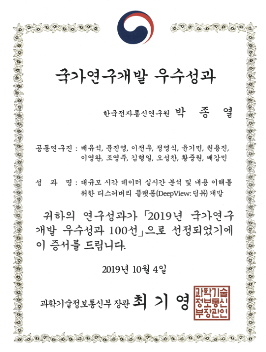

딥뷰 시각지능 기술


기술문의: 배유석 책임연구원 (baeys@etri.re.kr), 윤기민 선임연구원(kimin.yun@etri.re.kr)
연구소개 동영상
연구 목표
(총괄) 대규모 실시간 영상 이해 기반의 시각지능 플랫폼 개발, ETRI)
(1세부) 실시간 대규모 영상 데이터 이해·예측을 위한 고성능 비주얼 디스커버리 플랫폼 개발, 주관: ETRI
(2세부) 대규모 실시간 비디오 분석에 의한 전역적 다중 관심객체 추적 및 상황예측 기술 개발, 주관: GIST
(4세부) 예지형 시각 지능 원천 기술 개발, 주관: POSTECH
* 3단계 (2021~2023) 연구에서는 총괄/1세부/4세부 통합되어 연구 진행
주요 연구 내용
1. 사물 및 행동이해를 위한 백본 네트워크 고도화 기술
- GPU 메모리 및 전력 효율적인 VoVNet (Varierty of View Network) 백본 네트워크 기술 개발
- One-shot aggregation을 통해 특징맵 중첩을 최소화하고 채널을 증가시켜 고속의 높은 정확도 달성
- 객체 분할 기술에 적용하여 센터 중심의 고속 객체 검출을 구현하여 세계 최고 성능 달성
- 적대적 공격에 강인한 백본 네트워크 기술 및 위치 예측 불확실성을 통한 강인한 객체 탐지 기술 개발
- 주요 성과
- Youngwan Lee et al., An Energy and GPU-Computation Efficient Backbone Network for Real-Time Object Detection, CVPR 2019 workshop.
- Youngwan Lee and Jongyoul Park, CenterMask: Real-Time Anchor-Free Instance Segmentation, CVPR 2020.
- Youngwan Lee et al., Localization Uncertainty Estimation for Anchor-Free Object Detection, ArXiv 2020.
- Joong-won Hwang et al., Adversarial Training with Stochastic Weight Average, ICIP 2021
2. 사람 상태 및 속성 이해 뉴럴넷 기술
- 실시간 사용자 상호작용이 가능한 고화실 얼굴 편집 및 복원 기술의 개발 (SC-FEGAN)
- 자기 지도 학습 기반의 회전에 강인한 사람 포즈 추정 기술
- 세부적인 사람 상태 이해를 위한 포즈 정보가 결합된 사람-사물 상호작용 관계 이해 기술
- 주요 성과
- Youngjoo Jo and Jongyoul Park, SC-FEGAN: Face Editing Generative Adversarial Network with User’s Sketch and Color, ICCV 2019.
- Kimin Yun et al., Robust Human Pose Estimation for Rotation via Self-Supervised Learning, IEEE Access, SCIE, 2020.
- Jaewon Jung et al., Improving visual relationship detection using linguistic and spatial cues, ETRI Journal, SCIE, 2020.
- Geonu Lee et al., Improved Human-Object Interaction Detection through On-the-Fly Stacked Generalization, IEEE Access, SCIE, 2021.
3. 비디오 행동 이해 네트워크 기술
- 스코어맵 추론 기술을 통한 비분할 영상에서의 정교한 행동 구간 탐지 기술
- 정보 차별화 유닛을 활용한 온라인 행동 구간 탐지 기술
- 다중 작업 학습을 활용한 실세계 쓰레기 투기 행위 탐지 기술
- 주요 성과
- Hyunjun Eun et al., SRG: Snippet Relatedness-based Temporal Action Proposal Generator, IEEE Transactions on Circuits and Systems for Video Technology, SCIE, 2019.
- Hyunjun Eun et al., Learning to Discriminate Information for Online Action Detection, CVPR, 2020.
- Hyunjun Eun et al., Temporal filtering networks for online action detection, Pattern Recognition, SCIE, 2021.
- Kimin Yun et al., Vision‐based garbage dumping action detection for real‐world surveillance platform, ETRI Journal (Best Paper Award), SCIE, 2019.
- Kangmin Bae and Kimin Yun et al., Anti-Litter Surveillance based on Person Understanding via Multi-Task Learning, BMVC, 2020.
4. 시각 지식 기반의 심층 분석 및 검색 기술
- 시공간 연산 기반 대규모 시각 지식의 경로 분석 및 검색 기술 개발
- 분산 인메모리 기반 색인 구조에서의 유사도 기반 검색 구조와 색인 구조 개선
- 고속의 대용량 CCTV 메타데이터에 대한 시공간, 이미지, 텍스트 속성을 고려한 색인 구조 연구
- 주요 성과
- Yongjin Kwon et al., Hierarchically Linked Infinite Hidden Markov Model based Trajectory Analysis and Semantic Region Retrieval in a Trajectory Dataset, Expert Systems with Applications, SCIE, 2017.
- Kyoungsoo Bok et al., An efficient continuous k-nearest neighbor query processing scheme for multimedia data sharing and transmission in location based services, Multimedia Tools and Applications, SCIE, 2019.
- Kyoungsoo Bok et al., In-Memory Caching for Enhancing Subgraph Accessibility, Applied Sciences, SCIE, 2020.
연구실적(홍보 및 사업화)
대전시 100채널 영상 관제 실증

주요 연구실적 (논문)
[International Journals]
- 이연건 외, "SpherePHD: Applying CNNs on 360° Images with Non-Euclidean Spherical PolyHeDron Representation,”, IEEE Transactions on Pattern Analysis and Machine Intelligence (TPAMI), SCIE, 2020.
- 윤기민 외, "Robust Human Pose Estimation for Rotation via Self-Supervised Learning," IEEE Access, SCIE, 2020.
- 정재원 and 박종열, "Improving visual relationship detection using linguistic and spatial cues," ETRI Journal, SCIE, 2020.
- 복경수 외, "Historical Graph Management in Dynamic Environments," Electronics, SCIE, 2020.
- Bhishan Bhandari et al, "Body-Part-Aware and Multitask-Aware Single-Image-Based Action Recognition,”, Applied Sciences, SCIE, 2020.
- 복경수 외, "In-Memory Caching for Enhancing Subgraph Accessibility," Applied Sciences, SCIE, 2020.
- 문진영 외, "Detecting user attention to video segments using interval EEG features," Expert Systems with Applications, SCIE, 2019.
- 윤기민 외, "Vision-based Garbage Dumping Action Detection for Real-World Surveillance Platform," ETRI Journal, SCIE, 2019.
- 복경수 외, "An efficient continuous k-nearest neighbor query processing scheme for multimedia data sharing and transmission in location based services," Multimedia Tools and Applications, SCIE, 2019.
- 복경수 외, "Load Balancing Using Load Threshold Adjustment and Incentive Mechanism in Structured P2P Systems," IEICE Transactions on Information and Systems, SCIE, 2019.
- 복경수 외, "Recommending similar users using moving patterns in mobile social networks," Computers and Electrical Engineering, SCIE, 2019.
- 복경수 외, "Load Balancing Scheme for Effectively Supporting Distributed In-Memory Based Computing," Electronics, SCIE, 2019.
- 복경수 외, "Provenance compression scheme based on graph patterns for large RDF documents," Journal of Supercomputing, SCIE, 2019.
- 복경수 외, "Expert Finding Considering Dynamic Profiles and Trust in Social Networks," Electronics, SCIE, 2019.
- 박상덕 외, "Parallel Insertion and Indexing Method for Large Amount of Spatiotemporal Data Using Dynamic Multilevel Grid Technique," Applied Sciences, SCIE, 2019.
- 윤상두 외, "Action-Driven Visual Object Tracking with Deep Reinforcement Learning," IEEE Trans. on Neural Networks and Learning Systems, SCIE, 2018.
- 복경수 외, "Complex Event Processing for Sensor Stream Data," Sensors, SCIE, 2018.
- 복경수 외, "Detecting Incremental Frequent Subgraph Patterns in IoT Environments," Sensors, SCIE, 2018.
[International Conferences]
- Dae Ung Jo et al., 'Associative Variational Auto-encoder with Distributed Latent Spaces and Associators”, AAAI, 2020.,
- Youngwan Lee, et al., "CenterMask: Real-Time Anchor-Free Instance Segmentation," CVPR, 2020.
- Gun-Hee Lee and Seong-Whan Lee, "Uncertainty-aware Mesh Decoder for High Fidelity 3D Face Reconstruction," CVPR, 2020.
- Hyunjun Eun et al., "Learning to Discriminate Information for Online Action Detection," CVPR, 2020.
- Kangmin Bae and Kimin Yun et al., "Anti-Litter Surveillance based on Person Understanding via Multi-Task Learning," BMVC, 2020.
- Jaeyeon Kang et al., "Deep Space-time Video Upsampling Networks,” ECCV, 2020.
- Byeongho Heo et al., "Knowledge Distillation with Adversarial Samples Supporting Decision Boundary," AAAI, 2019.
- Byeongho Heo et al., “Knowledge Transfer via Distillation of Activation Boundaries Formed by Hidden Neurons,” AAAI, 2019.
- Seonguk Seo et al., "Learning for Single-shot Confidence Calibration in Deep Neural Networks through Stochastic Inferences,” CVPR, 2019.
- Seonghyeon Nam et al., “End-to-end Time-lapse Video Synthesis from a Single Outdoor Image,” CVPR, 2019.
- Jiwoong Park et al., "Symmetric Graph Convolutional Autoencoder for Unsupervised Graph Representation Learning,” ICCV, 2019.
- Youngjoo Jo and Jongyoul Park, "SC-FEGAN: Face Editing Generative Adversarial Network with Users's Sketch and Color," ICCV, 2019.
- Sunoh Kim et al., "Skeleton-based Action Recognition of People Handling Objects," WACV, 2019.
- Youngwan Lee, et al., "An Energy and GPU-Computation Efficient Backbone Network for Real-Time Object Detection," CVPR Workshop, 2019.
- Seoungwug Oh et al., "Fast Video Object Segmentation by Reference-Guided Mask Propagation,” CVPR, 2018.
- Seung-Wook Kim et al., "Parallel Feature Pyramid Network for Object Detection," ECCV, 2018.
- Yonghyun Kim, et al., "SAN: Learning Relationship between Convolutional Features for Multi-Scale Object Detection," ECCV, 2018.
- Ilchae Jung, et al., "Real-Time MDNet," ECCV, 2018.
[Domestic Journals]
- 은현준 외, "시간적 행동 구간 생성을 위한 LSTM 기반 단편 관련성 학습", 한국통신학회 논문지, 2020.
- 은현준 외, "시간적 행동 검출: 서베이", 한국통신학회 논문지, 2020.
- 문진영 외, "시간적 행동 탐지 기술 동향", 전자통신동향분석, 2020.
- 조영주 외, "GAN 적대적 생성 신경망과 이미지 생성 및 변환 기술 동향", 전자통신동향분석, 2020.
- 최도진 외, "스파크 환경에서 내용 기반 이미지 검색을 위한 효율적인 분산 인-메모리 고차원 색인기법", 정보과학회논문지, 2020.
- 박수빈 외, "소셜 네트워크에서 연관 문서 분석을 통한 지역 이벤트 검출 기법", 데이타베이스연구 논문지, 2020.
- Ariunerdene Nyamdavaa 외, "분산 병렬 환경에서 이동객체에 대한 위치기반 연속 이벤트 검출 기법", 한국정보기술학회논문지, 2020.
- 최도진 외, "대용량 그래프 스트림 환경에서 데이터 재사용을 고려한 근사 Top-k 서브 그래프 매칭 기법", 한국콘텐츠학회논문지, 2020.
- 위지원 외, "DNN 모델을 이용한 기계 학습 기반 k-최근접 질의 처리 최적화 기법", 한국콘텐츠학회논문지, 2020.
- 김민영 외, "분산 환경에서 경로 질의 기반 서브 그래프 탐색 기법", 콘텐츠학회논문지, 2019.
- 최도진 외, "데이터 재사용을 고려한 효율적인 연속 서브 그래프 매칭 기법", 정보과학회논문지, 2019.
- 조정찬, "단일 이미지에 기반을 둔 사람의 포즈 추정에 대한 연구 동향", 차세대컴퓨팅학회 논문지, 2019.
- 서인덕 외, "소셜 네트워크에서 연결 관계와 영향력을 고려한 사용자 간접 신뢰도 판별", 한국콘텐츠학회논문지, 2018.
- 김형일 외, "딥러닝 기반 고성능 얼굴인식 기술 동향", 전자통신동향분석, 2018.
수상
2019년 국가연구개발 우수성과 100선, 2019년도 ETRI 대표성과 대상
ImageNet Large Scale Visual Recognition Challenge (ILSVRC)
- 2017 ILSVRC 사물 검출 (DET) 분야 카테고리 2위
- Seung-Hwan Bae et al., "Rank of Experts: Detection Network Ensemble", ArXiv, 2017.

연구자 개인링크
윤기민 선임 연구원 https://sites.google.com/view/kiminyun/profile
이영완 연구원 https://github.com/youngwanLEE
조영주 연구원 https://github.com/run-youngjoo/SC-FEGAN
Acknowledgement
This work was supported by Institute of Information & Communications Technology Planning & Evaluation(IITP) grant funded by the Korea government(MSIT) (No.2014-3-00123, Development of High Performance Visual BigData Discovery Platform for Large-Scale Realtime Data Analysis].
Updated: October 8, 2021